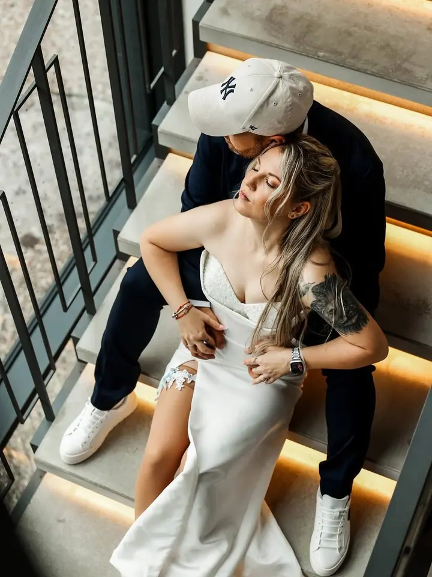
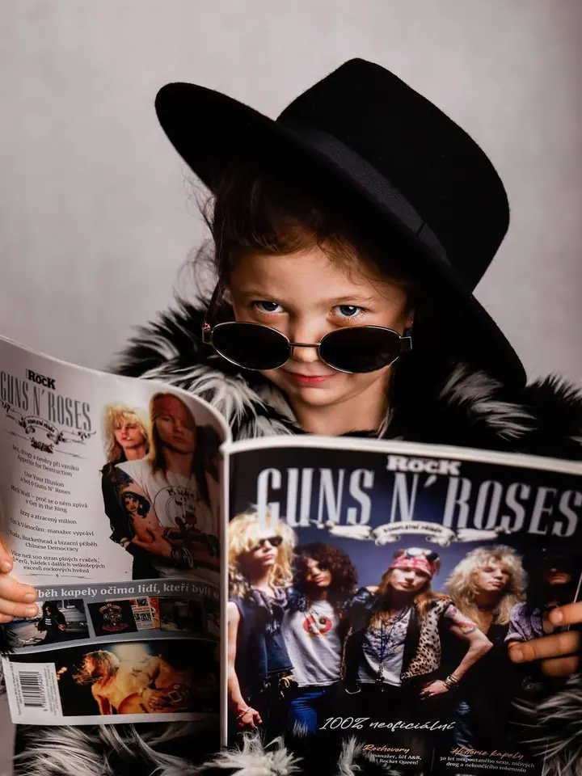
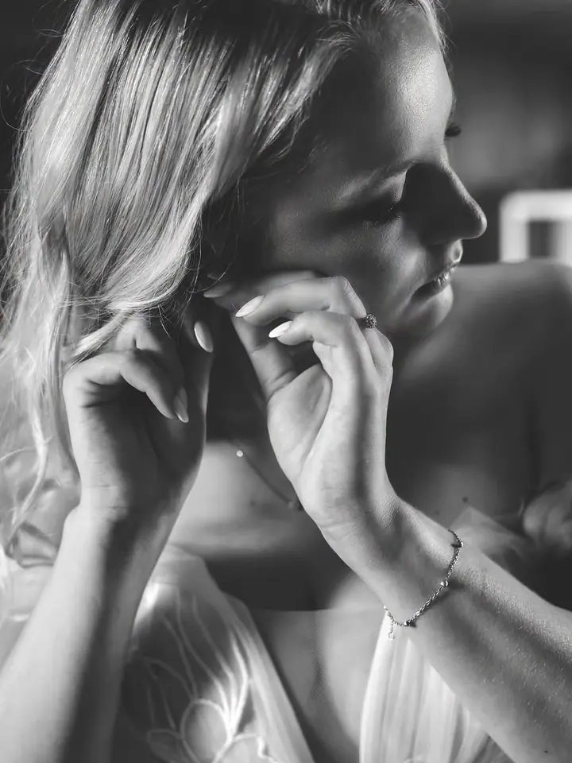
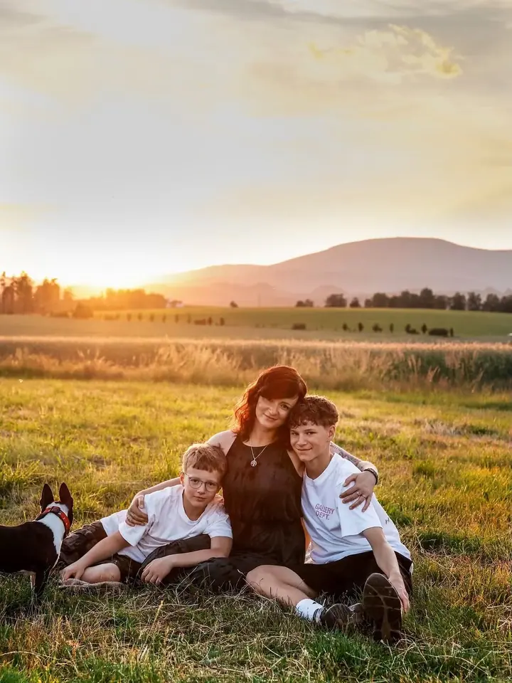
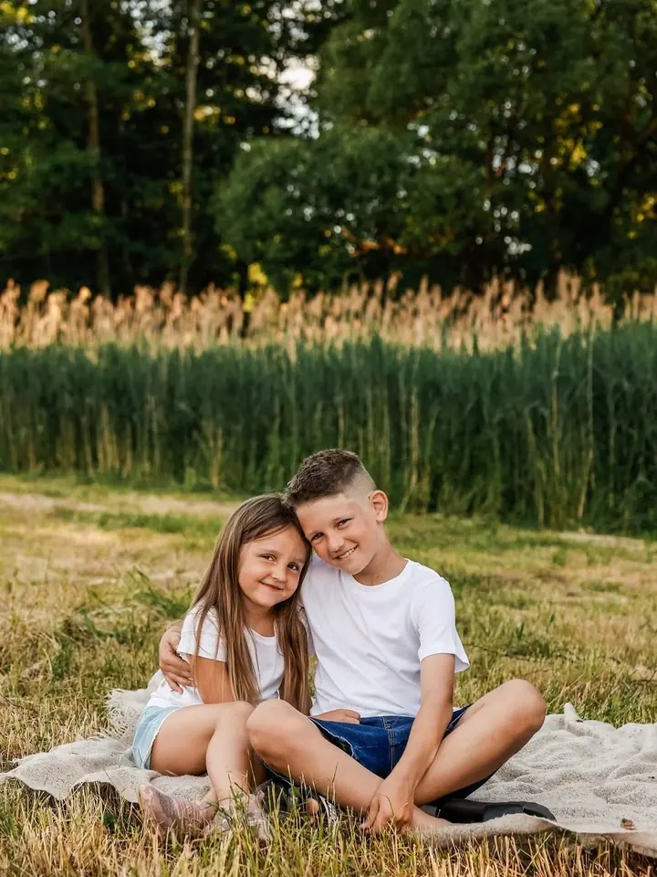
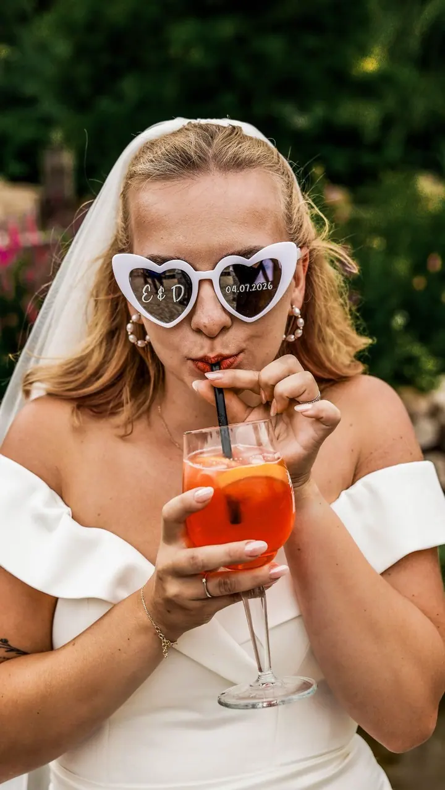
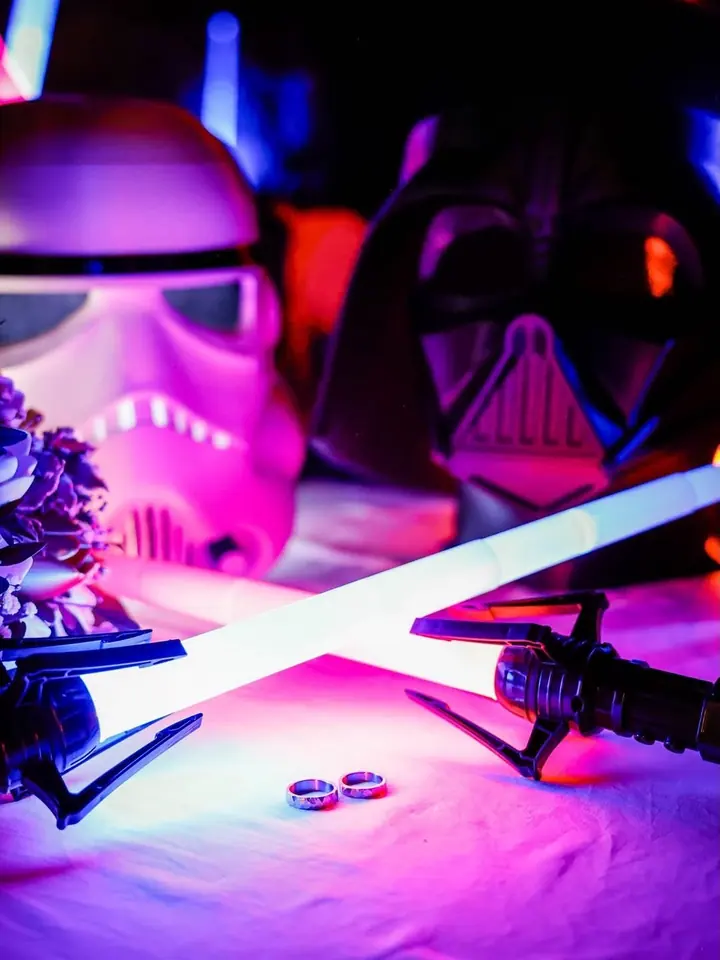

01 / 04
Svatby
Svatby jsou moje srdcovka. Z celého dne se snažím udělat nenucenou reportáž a párové focení zvládneme rychle a příjemně, pánové si klidně můžou vzít pivo.
Zeptat se na termín→






Svatby, rodiny a nenucená radost
Zeptat se na termín →(01) Ahoj
Jmenuji se Tereza Tamchyna Bönischová a v Trutnově fotím svatby, rodiny s dětmi i ženské portréty. Sama o sobě s nadsázkou říkám, že jsem fotograf jakýkoliv, bláznivý a milý. Fotím u sebe v ateliéru, u vás doma nebo kdekoliv venku.
867lidí sleduje mou práci na Instagramu
559příspěvků s fotkami a příběhy
(02) Co fotím
01 / 04
Svatby jsou moje srdcovka. Z celého dne se snažím udělat nenucenou reportáž a párové focení zvládneme rychle a příjemně, pánové si klidně můžou vzít pivo.
Zeptat se na termín→02 / 04
Fotím u mě v ateliéru, u vás doma nebo kdekoliv venku. Na děti mám hodně es v rukávu a umím různé hlasy a zvuky.
Zeptat se na termín→03 / 04
Klidné focení nejmenších i větších dětí v ateliéru nebo u vás doma. V ateliéru vám za příplatek připravím i narozeninovou výzdobu.
Zeptat se na termín→Dále nabízím
Ženské, párové i úplně bláznivé portréty. Na make-up a vlasy vám může přijít moje báječná stylistka.
↗(04) Postup
Od první zprávy po hotovou galerii.
Krok 1 z 4
Řekněte mi, co si představujete, a společně domluvíme termín, místo i balíček. Všechno je na domluvě.
Krok 2 z 4
Fotit můžeme u mě v ateliéru, u vás doma nebo kdekoliv venku. Na svatbu po domluvě dojedu kamkoliv.
Krok 3 z 4
Běžné focení trvá zhruba 1 až 2 hodiny podle toho, kolik máte převleků a jakou náladu mají děti. Na svatbě vám poradím, jak focení rozvrhnout, aby co nejméně zasahovalo do zábavy.
Krok 4 z 4
Náhledy posílám do 2. dne a fotky si sami vyberete. Hotové je máte do 14 dnů od platby, v barevné i černobílé verzi, a dva roky je pro vás zálohuji.
Často se z vás stávají kamarádi.
(05) Za objektivem
Jsem z Trutnova a pod značkou ttphoto fotím skoro všechno, co se týká lidí: svatby, těhotenské focení, miminka, děti, rodiny, páry, portréty i zvířátka. Mám vlastní ateliér, ale klidně přijedu za vámi domů nebo vyrazíme ven. Můžu s sebou přivézt i dekorace a osvětlení.
Svatby jsou moje srdcovka. Jsem s vámi od prvních stresů přes srandu až po dojemné chvíle a často bývám vrba, spojka i zvěd v jednom. Potom vás fotím s bříškem, s miminkem, s celou rodinou a často se z vás stávají kamarádi. To je na téhle práci to nejhezčí.
Při focení se nikam nehoníme. Ještě se mi nestalo, že bych si s nějakým lumpem neporadila, protože umím různé hlasy a zvuky. Všechno je na domluvě, tak se mě klidně zeptejte na cokoliv.
Tereza
Tereza Tamchyna Bönischová · Svatební, rodinná a portrétová fotografka
Balíčky začínají na 1 500 Kč za 5 retušovaných fotek, nejčastěji se volí 10, 20 nebo 30 fotek za 2 100 až 3 800 Kč. Svatby fotím ve třech variantách od 8 500 Kč.
Hotové fotky z běžného focení posílám do 14 dnů od platby, ve svatební sezóně do 3 týdnů. Svatební fotky se snažím mít hotové do 6 týdnů a předávám je na flash disku i elektronicky.
Ideální je kolem 7. měsíce těhotenství. Fotit můžeme v ateliéru nebo kdekoliv, kde se vám líbí.
Neupravené fotky ani RAW nedávám, snad mi to odpustíte. Dostanete ode mě vybrané a pečlivě upravené snímky.
(07) Kontakt
Napište pár vět o tom, co si představujete, a termín, který se vám hodí.
tereza.bon@seznam.cz.cz